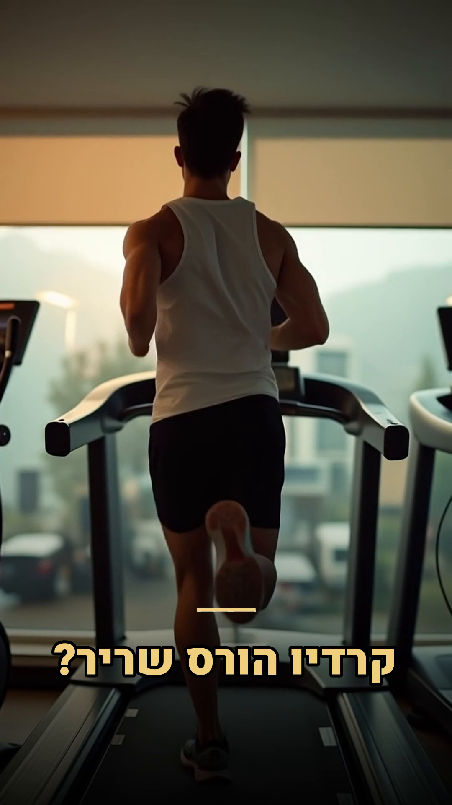
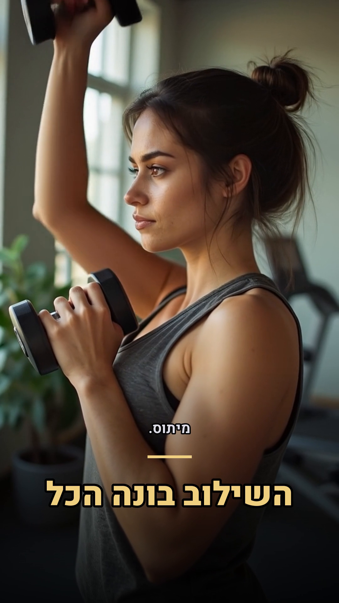
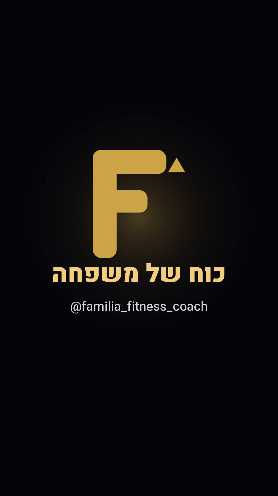

תמונה ריאליסטית←
וידאו AI←
כיתובי-זהב←
ריאל מוכן



מה שאתה רואה: ריאל שלם שהמערכת הרכיבה לבד — קליפים שייצרנו ב-AI, כיתובי-זהב בעברית (מתרנדרים נכון, RTL), לוגו, וכרטיס-סיום ממותג. זה כל מה שבנינו היום, מחובר לכלי-הפקה אחד.
מה אפשר עוד: מוזיקה (נוסיף טראק חופשי-זכויות או דרך אינסטגרם), עריכת-קצב, וכמובן — להחליף את הקונספט/כיתובים לכל נושא. זה התבנית לייצור-סדרתי.